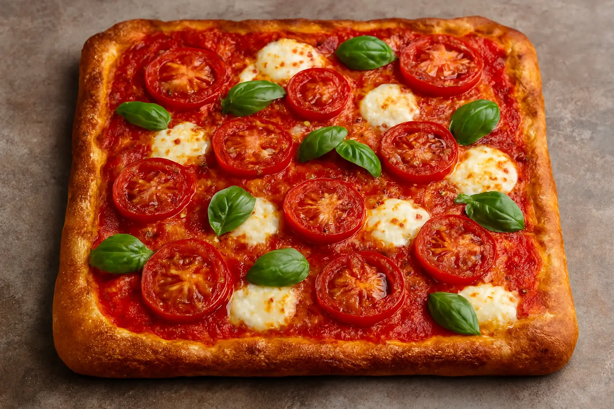

Pizza Focaccia

Description:
Pizza focaccia is a delicious hybrid that combines the thick, airy, and olive-oil-rich texture of focaccia bread with classic pizza toppings. It provides a sturdy yet soft base for various ingredients and is typically baked in a sheet pan, similar to Detroit or Roman pan pizza styles
Ingredients:
Focaccia Base
- 2 cups lukewarm water
- 1 (0.25 ounce) packet active-dry yeast (I prefer Red Star)
- 1/2 teaspoon sugar
- 2 tablespoons olive oil
- 1 tablespoon kosher salt
- 3 cups all-purpose flour
- 2 cups bread flour
Pizza Toppings
- olive oil, as needed
- 1 cup shredded low-moisture mozzarella cheese
- 1 cup marinara sauce
- 1/2 cup shredded Parmesan cheese
- 1/4 cup mini pepperoni slices (Optional)
Steps:
- For the focaccia: Pour water into a large bowl and sprinkle yeast and sugar on top. Mix briefly with a dough whisk or wooden spoon, then let sit until the yeast has bloomed, about 10 minutes. When ready, the top of the bowl should look like a foamy beer.
- Stir in olive oil and salt. Add all-purpose flour and bread flour and stir with the dough whisk or a wooden spoon until no dry streaks of flour remain.
- Cover the bowl and allow to rise for 45 minutes. After 45 minutes, uncover the bowl and wet your hands slightly. Starting at the top of the bowl, use your wet hands to pull the top edge of the dough up and over the dough ball. Continue this process until you work your way all around the dough. This is known as a stretch and fold. It helps to develop gluten and replaces traditional kneading. Cover the bowl again and let sit in a warm spot.
- After 30 minutes, repeat the stretch and fold process. Cover the bowl and perform two more sets of stretches and folds 30 minutes apart. After the 4th stretch and fold, cover the bowl and let rise for 30 minutes.
- At this point, the dough should have doubled in volume and should be smooth to the touch. The dough is now ready to be used, or can be chilled overnight to use the next day.
- For the toppings: Lightly oil a 9x13-inch metal cake pan. Set the focaccia base in the pan, using your fingers to gently stretch it into all four corners. Cover the focaccia and let rise for about 1 hour.
- Meanwhile, preheat the oven to 450 degrees F (230 degrees C).
- After focaccia is risen, lightly drizzle the surface with olive oil. Use your fingers to dimple the surface, then scatter mozzarella cheese in an even layer.
- Use a spoon to dollop the surface with marinara, then sprinkle the top with Parmesan cheese. Top with pepperoni.
- Bake in the preheated oven until focaccia and cheeses are golden brown and bubbly, 25 to 30 minutes.
- Remove from the oven and let sit in the pan for about 10 minutes, then carefully slide focaccia onto a cutting board. Let cool for an additional 10 minutes before slicing and serving.
Cook's Note
If you prefer to weigh ingredients for the focaccia base with a kitchen scale, here are the ingredients by weight: 500 grams lukewarm water, 1 (7 gram) packet active-dry yeast, 1/2 teaspoon sugar, 30 grams olive oil, 15 grams kosher salt, 400 grams all-purpose flour, and 250 grams bread flour.
Home